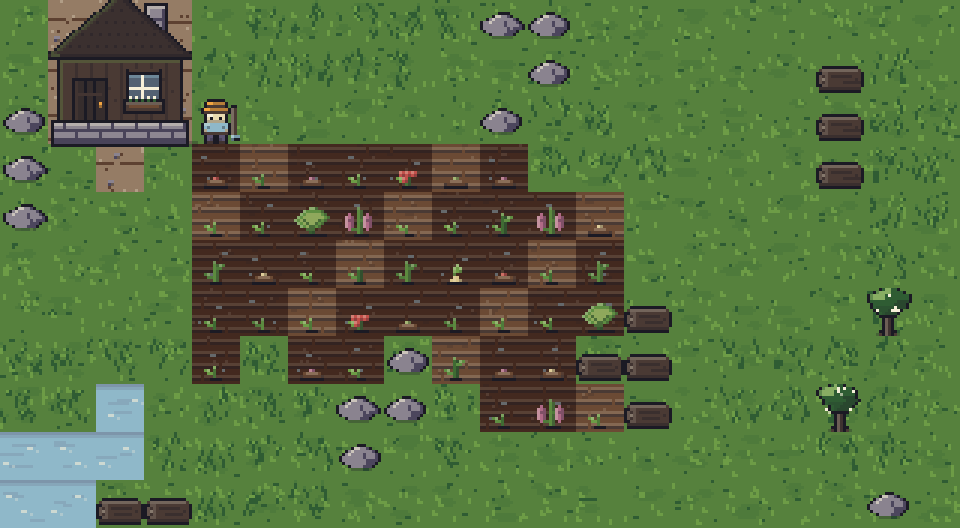
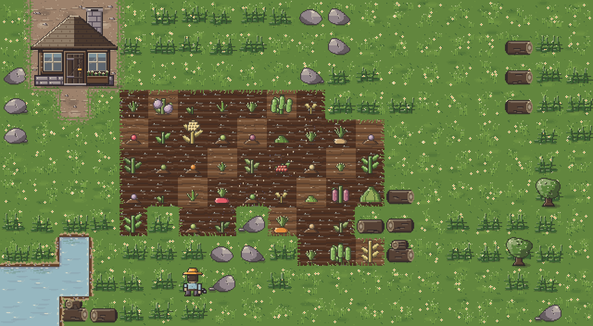
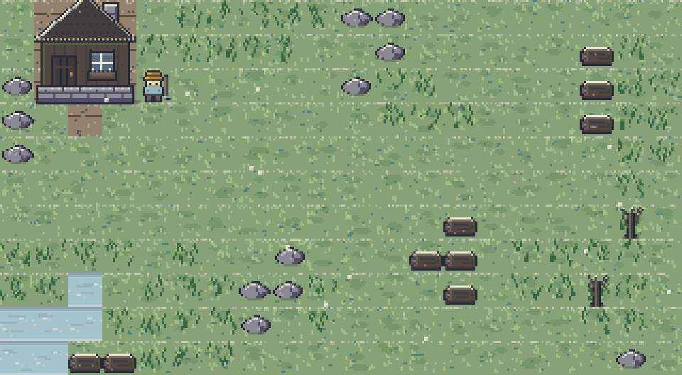
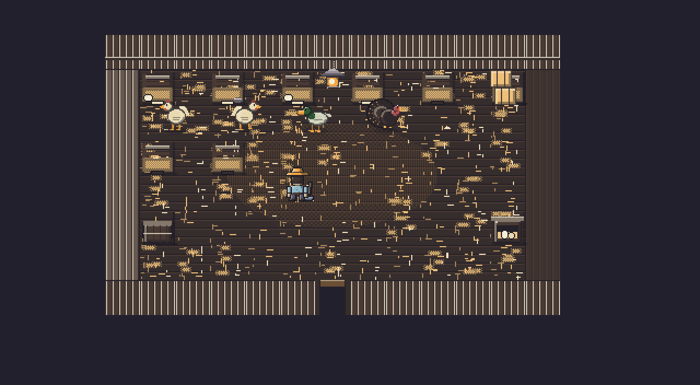
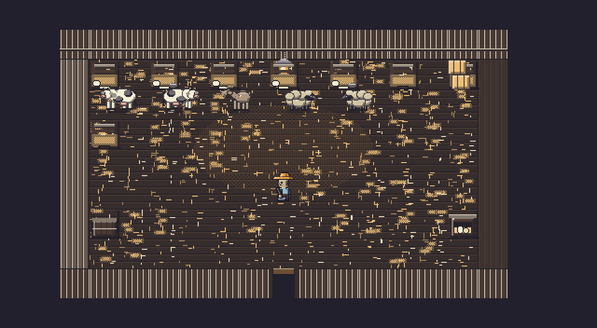
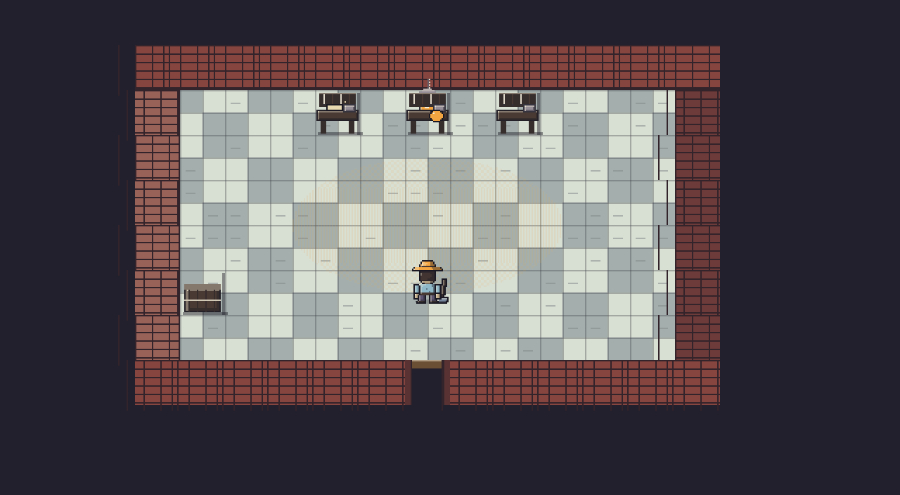
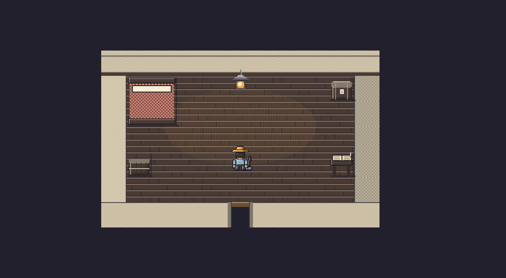

Four real seasons
Twelve crops, each with its own season, growth time and payoff. Winter is not a dead month, but it is a lean one. Anything still in the ground when the season turns is lost.
A quiet valley, a rusty hoe, and one year to make something of it.
Free and open source. No account, no telemetry.
Windows only. The installer is not code-signed, so SmartScreen will warn on first run. Every build is produced in public from the source in this repository, and you can build it yourself instead.
Every release takes its code name from the public dim sum catalogue. The photograph is linked from there, never copied here.



A coop is not a menu. Walk up to its door, press the same button you use on a crop row, and you are inside it — a nest per bird along the wall, a feed trough, the hay, and whoever lives there standing in their pens. Using a pen does the most useful thing that is pending: collect what is ready, then feed, then pet. One button, and never a submenu.




Twelve crops, each with its own season, growth time and payoff. Winter is not a dead month, but it is a lean one. Anything still in the ground when the season turns is lost.
Crops advance only on the days they are watered. Miss three in a row after a sprout appears and it withers. Rain does the work for you; sprinklers do it every day, if you can afford them.
Every swing of the hoe costs energy and ten minutes of daylight. Push past either and the farmer is carried home, with a bill for it in the morning.
No sprite sheets, no font files, no audio files, no runtime dependencies. The tiles, the crops, the farmer, the 5×7 typeface and every sound are generated when the game starts.
| Arrows / WASD | Walk, and face that way |
|---|---|
| Space / Enter | Use what is ahead: swing the tool, open a machine, or go through a door |
| Esc | Leave a room, or close the top panel |
| L | Inside an animal building, its occupants as a list |
| 1 – 7 | Hoe, can, seeds, hand, axe, sprinkler, fertilizer |
| Q / E | Cycle the selected seed |
| B | Shop |
| I | Bag |
| N | Sleep |
| H / F1 | Help |
| M | Mute |
Playable start to finish from the keyboard. The mouse is optional.
git clone https://github.com/Ding-Ding-Projects/farming-game.git
cd sprout-hollow
npm install
npm start
Electron, TypeScript and Vite. npm test runs the rule-layer suite,
npm run package produces the installer for your platform.